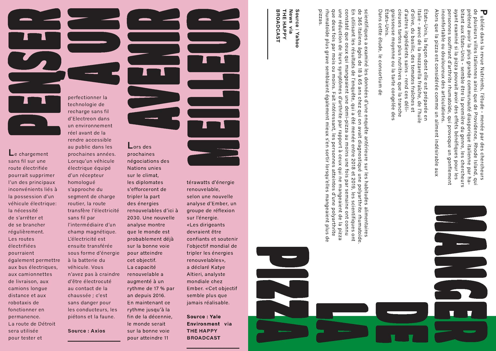
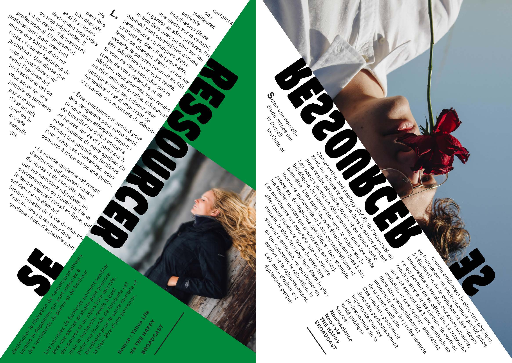
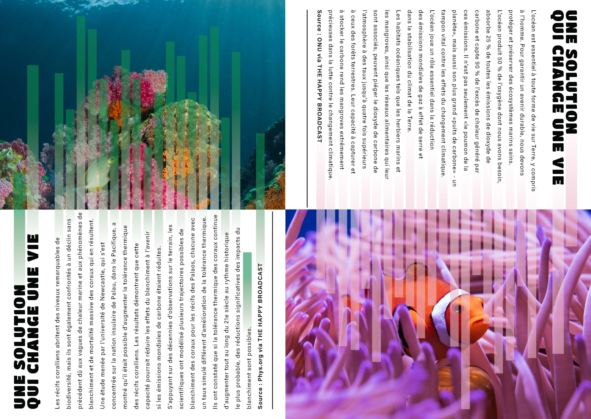

LE VERRE À MOITIÉ PLEIN
2023
InDesign
Photoshop
design éditorial
Conception de la ligne graphique de la collection du média positif « Le verre à moitié plein » qui est une revue hebdomadaire. Elle partage exclusivement des nouvelles et des informations motivantes et positives à travers des brèves et quelques textes longs. L’objectif est de répandre du positif dans une période qui ne divulgue que le négatif de l’actualité et qui en devient anxiogène. Ce petit journal doit transmettre les valeurs des notions de positivité et de découvertes inspirantes. J’ai joué avec la notion de diffusion en dépassant les limites du papier.
Source photos : unsplash.com